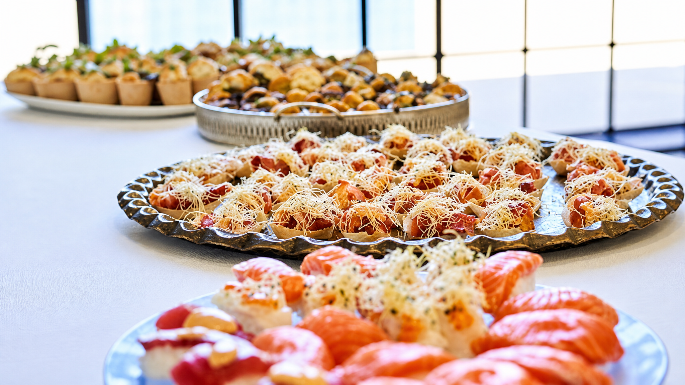

Catering & selskaber
Vi bringer hyggen hjem til jer
Catering, take away, og private dining med Niels som lejekok i jeres egne rammer. Op til ca. 40 gæster i caféen, eller transportabel mad til jeres sted.
Catering
Mad til selskaber, i caféen eller hos jer
Vi laver catering til mindre selskaber: firmafrokoster, fødselsdage, konfirmationer, mindesammenkomster. Plads til ca. 40 gæster i caféen. Ellers leverer vi maden til jeres sted, klar til at sætte på bordet.
Vi tilpasser menuen til anledningen. Det kan være klassisk dansk buffet, en blanding af tapas og Thai, eller noget vi finder på sammen. Skriv om jeres dag, så taler vi om format og menu.
Skriv om catering

Take away
Ring og bestil, så har vi det klar, når I henter.
Bestil
Hent på
Lille Torv 3, 7430 Ikast
I caféens åbningstid
Private dining · Lejekok
Niels som kok i jeres eget hjem
Vil I have Niels ud og lave maden hos jer, kan I spørge til mulighederne. Menuen bliver aftalt efter anledningen og rammerne.
Han har sin egen lille virksomhed til netop det her: Lej en Kok. Det er der I kan læse om mulighederne og sende en forespørgsel. Den kører separat fra caféen, men det er den samme kok. Så hvis I har spist hos os og kan lide det, ved I, hvad I får.
Besøg Lej en Kok
"Lækkert, bekvemt og med omtanke."
Jernbane Cafeen, Ikast
Få et tilbud
Lad os snakke om det
Send os en mail eller ring. Så vender vi tilbage, når vi har set på mulighederne.